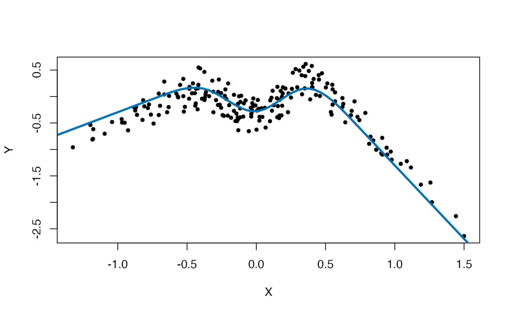

Method for estimating a nonlinear causal relationship \(X\to Y\) that is assumed to linearly extrapolate outside of the support of \(X\).
NILE( Y, X, A, lambda.star = "test", intercept = TRUE, df = 100, x.new = NULL, test = "penalized", p.min = 0.05, plot = TRUE, f.true = NULL, par.x = list(), par.a = list(), par.cv = list(num.folds = 10, optim = "optimize") )
| Y | A numeric vector with observations from the target variable |
|---|---|
| X | A numeric vector with observations from the predictor variable |
| A | A numeric vector with observations from the exogenous variable |
| lambda.star | either a positive numeric, |
| intercept | logical; indicating whether an intercept should be included into the regression model |
| df | positive integer; number of basis splines used to model the nonlinear function \(X\to Y\) |
| x.new | numeric; x-values at which predictions are desried |
| test | character; !!! |
| p.min | numeric between 0 and 1; the significance level at which the test which determines lambda.star should be tested. |
| plot | logical; diagnostic plots |
| f.true | real-valued function of one variable; If the groundtruth is known, it can be suplied and will be included in diagnostic plots. |
| par.x | a list of different parameters determining the \(B\)-spline regression of \(Y\) onto \(X\)
|
| par.a | a list of different parameters determining the B-spline regression of the residuals \(Y - B(X)\beta\) onto the residuals \(A- ???\) !!!
|
| par.cv | A list with parameters for the cross-validation procedure.
|
An object of class AR, containing the following elements
coefficients estimated splines coefficients for the relationship \(X\to Y\)
residuals prediction residuals
fitted.values fitted values
betaA estimated spline coefficients for the regression of the prediction
residuals onto the variable \(A\)
fitA fitted values for the regression of the prediction
residuals onto the variable \(A\)
Y the response variable
BX basis object holding all relevant information about the B-spline
basis used for the regression \(X\to Y\)
BA basis object holding all relevant information about the B-spline
basis used for the regression of the residuals onto A
ols OLS loss at the estimated parameters
iv TSLS loss at the estimated parameters
ar NILE loss at the estimated parameters, that is,
\(OLS(\theta) + \texttt{lambda.star}\times TSLS(\theta)\)
intercept was an intercept supplied?
lambdaX penalty parameter used for the spline regression
\(X\to Y\)
lambdaA penalty parameter used for the regression of residuals
onto \(A\)
lambda.star the (estimated) value for lambda.star
pred predicted values at the supplied vector x.new
The NILE estimator can be used to learn a nonlinear causal influence of a real-valued predictor \(X\) on a real-valued response variable \(Y\). It exploits an instrumental variable setting; it assumes that the variable \(A\) is a valid instrument. The estimator uses B-splines to estimate the nonlinear relationship. It further assumes that the causal function extrapolates lienarly outside of the empirical support of \(X\), and can therefore be used to obtain causal predictions (that is, predicted values for \(Y\) under confounding-removing interventions on \(X\)) even for values of \(X\) which lie outside the training support.
On a more technical side, the NILE estimator proceeds as follows. First, two B-splines \(B = (B_1,...,B_{df})\) and \(C = (C_1, ..., C_{df})\) are constructed, which span the values of \(X\) and \(A\), respectively. These give rise to the loss functions OLS(\(\theta\)), which corresponds to the MSE for the prediction residuals \(Y - \theta^T B\), and TSLS(\(\theta\)), which are the fitted values of the spline-regression of the residuals \(Y - \theta^T B\) onto the spline basis \(C\). The NILE estimator the estimates \(\theta\) by minimizing the objective function $$OLS(\theta) + \texttt{lambda.star}\times TSLS(\theta) + PEN(\theta),$$ where PEN(\(\theta\)) is a quadratic penalty term which enforces smoothness.
The parameter lambda.star is chosen as the largest positive value for which the
corresponding solution yields prediction residuals which pass a test for vanishing
product moment with all basis functions \(C_1(A), \dots C_{df}(A)\).
Christiansen R, Pfister N, Jakobsen ME, Gnecco N, Peters J (2020). “The difficult task of distribution generalization in nonlinear models.” Available from https://arxiv.org/abs/20??.?????.
Rune Christiansen krunechristiansen@math.ku.dk
n.splines.true <- 4 fX <- function(x, extrap, beta){ bx <- splines::ns(x, knots = seq(from=extrap[1], to=extrap[2], length.out=(n.splines.true+1))[ -c(1,n.splines.true+1)], Boundary.knots = extrap) bx%*%beta } # data generating model n <- 200 set.seed(2) beta0 <- runif(n.splines.true, -1,1) alphaA <- alphaEps <- alphaH <- 1/sqrt(3) A <- runif(n,-1,1) H <- runif(n,-1,1) X <- alphaA * A + alphaH * H + alphaEps*runif(n,-1,1) Y <- fX(x=X,extrap=c(-.7,.7), beta=beta0) + .3 * H + .2 * runif(n,-1,1) x.new <- seq(-2,2,length.out=100) f.new <- fX(x=x.new,extrap=c(-.7,.7), beta=beta0) plot(X,Y, pch=20)## FIT! fit <- NILE(Y, # response X, # predictors (so far, only 1-dim supported) A, # anchors (1 or 2-dim, although 2-dim is experimental so far) lambda.star = "test", # (0 = OLS, Inf = IV, (0,Inf) = # nonlinear anchor regression, "test" = NILE) test = "penalized", intercept = TRUE, df = 50, # number of splines used for X -> Y p.min = 0.05, # level at which test for lambda is performed x.new = x.new, # values at which predictions are required plot=TRUE, # diagnostics plots f.true = function(x) fX(x,c(-.7,.7), beta0), # if supplied, the # true causal function is added to the plot par.x = list(lambda=NULL, # positive smoothness penalty for X -> Y, # if NULL, it is chosen by CV to minimize out-of-sample # AR objective breaks=NULL, # if breaks are supplied, exactly these # will be used for splines basis num.breaks=20, # will result in num.breaks+2 splines, # ignored if breaks is supplied. n.order=4 # order of splines ), par.a = list(lambda=NULL, # positive smoothness penalty for fit of # residuals onto A. If NULL, we first compute the OLS # fit of Y onto X, # and then choose lambdaA by CV to # minimize the out-of-sample MSE for predicting # the OLS residuals breaks=NULL, # same as above num.breaks=4, # same as above n.order=4 # same as above ))#> [1] "lambda.cv.a = 1.4293232458819" #> [1] "lambda.cv.x = 0.00159332920036247" #> [1] "lambda.star.p.uncorr = 3.5873327255249"